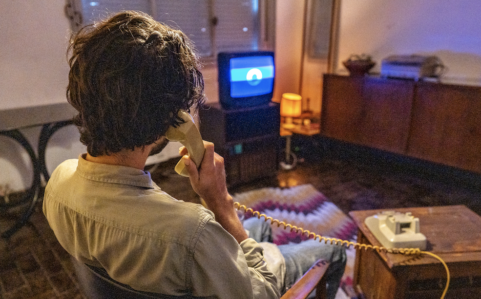
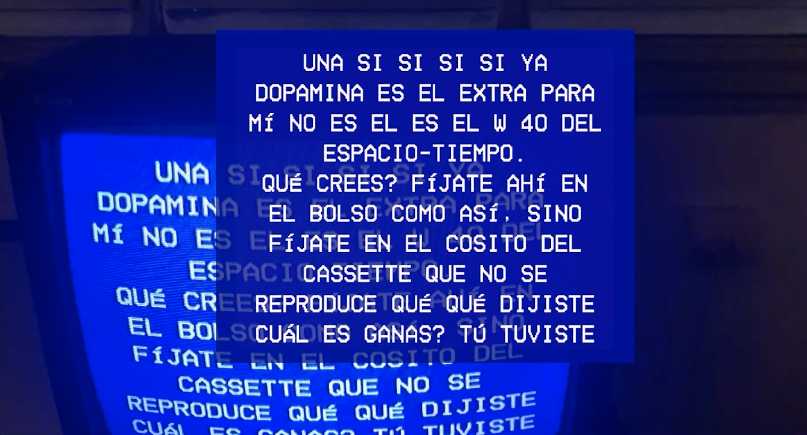
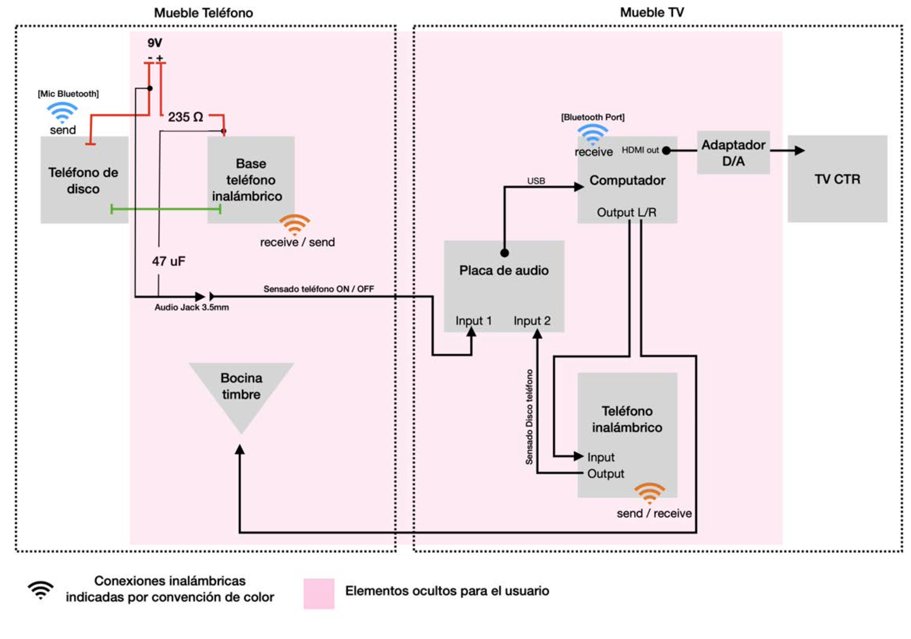

Project Overview
Broken Telephone is an interactive installation that probes the fragile interplay between human expression and technological mediation. A vintage rotary phone and CRT television bridge analog and digital realms, inviting users into a flawed dialogue with a machine. Lifting the receiver triggers a synthetic voice posing a question, with responses transcribed in real-time on the CRT and woven into a collective corpus. The system alternates between a conversational mode, generating responses from past inputs, and a poetic mode, where dialing constructs verses word by word. For BODIES-MACHINES-PUBLICS 2025, the project will integrate New Delhi’s socio-technological context, incorporating local voices to explore digital distortions, surveillance, and identity in public spaces.
Know How
Relevance to BODIES-MACHINES-PUBLICS
Broken Telephone aligns with the residency’s exploration of bodies, machines, and publics by critiquing the illusion of seamless human-machine communication. Rooted in Jussi Parikka’s media archaeology, it repurposes obsolete technologies to reflect on data surveillance and commodified expression. In New Delhi, it will engage local narratives through fragmented dialogues maybe around gender or urban ecologies everything will depend on the information collected from its space and installative environment. A situated proposal. The algorithm constructs questions from its surrounding environment to uncover situated narratives, prompting critical reflection on gender, surveillance, and urban ecologies, while fostering fragmented dialogue on digital identity and presence.
Methodology
The methodology for Broken Telephone integrates technical precision, conceptual inquiry, and community engagement to explore communication distortions, tailored to Khoj Studios’ context. The approach includes:
- Technical Framework: Technical Framework: A closed-circuit telephone system uses a rotary phone and a modern wireless phone (9V-powered) to capture user speech via a Bluetooth headset. The system invests heavily in a computational framework to run a multilingual Whisper model, prioritizing real-time multilingual transcription to explore broken and distorted message narratives. Processing and RiTa tokenize text for poetic or conversational outputs, emphasizing the fragmented, warped nature of digital communication. Max for Live captures physical interactions (phone state, dial rotations) via OSC, syncing with CRT visualizations through OBS and ChromaKey to amplify the aesthetic of distorted narratives.
- Local Adaptation:Multilingual support (Hindi, English, regional languages) will use localized text-to-speech and transcription models, reflecting New Delhi’s cultural diversity. By leveraging Whisper’s multilingual capabilities, it delves into the misinterpretations and distortions inherent in transcription models, revealing situated narratives shaped by linguistic and cultural nuances.
- Community Engagement: Workshops with local communities will co-create a multilingual corpus, incorporating narratives on caste, gender, and urban ecologies, ensuring cultural resonance.
- Aesthetic Design: Visuals draw on Indian telecommunications history and a 90s VHS menu aesthetic (white pixelated text on blue).
- Interaction Logic: A state machine (IDLE, RINGING, POST_RING, PATH_1, PATH_2) ensures fluid transitions. Poetic mode (PATH_1) generates verses via dial rotations; conversational mode (PATH_2) uses corpus-based responses, deliberately disconnected from user input to highlight communication gaps.
Proposed Development at Khoj Studios
The public installation will invite tactile and sonic engagement, opening space for reflection on surveillance and authenticity in digital publics. Creation spaces will be used to develop a multilingual model and explore its potential, framing this as an opportunity to achieve computational stability and efficiency for an installation capable of supporting a high volume of daily interactions. The budget will support the development of the model, as well as the integration of sensors, vintage technologies, and workshop facilitation.
Media Showcase


Video Demonstration: Teléfono roto – Interactive Installation (Version 1.0). This 16-minute clip showcases user interactions with the installation V1, highlighting the interplay of analog and digital communication.
Watch the 16-Minute Video
About the Artist
Julián Ospina Córdoba, a multimedia artist from Universidad Nacional de las Artes, Argentina, explores analog-digital intersections through interactive installations. His work critiques technology’s mediation of human experience, drawing on media archaeology and participatory practices. Contact: julianospina@outlook.com | @locojoc

Know How: Descriptive Memory Teléfono roto V1.0
Broken Telephone explores the interplay between contemporary digital processes and obsolete analog technologies, using real-time voice transcription to generate texts and synthetic speech for audible responses. The development process involved overcoming technical challenges, refining the conceptual narrative, and adapting to emerging constraints. Below is a detailed summary of the project’s technical and conceptual evolution, drawn from the original descriptive memory.
- Transcription Exploration: Initial tests with OpenAI’s Whisper were abandoned due to performance issues without an NVIDIA GPU. Mac’s native dictation was chosen for its fluid real-time transcription, despite occasional inaccuracies, which aligned with the project’s theme of embracing communication flaws. AppleScript and Automator activated dictation externally, saving transcriptions to a TXT file for Processing to read.
- Speech Synthesis: Python-based TTS models were slow without GPU support, so Mac’s native “Isabela” voice (Argentinian Spanish) was used via Processing’s “say” command, ensuring local, real-time audio generation without external dependencies like SpeakLine.
- Telephone Circuit Design: A closed-circuit system linked a rotary phone to a modern wireless phone (9V-powered). A Bluetooth headset replaced the rotary phone’s coil for clearer voice capture. The wireless phone injected synthetic audio into the rotary phone. A 47μF capacitor stabilized electromagnetic interference, and Max for Live sensed phone states (hung up/lifted) and dial rotations, sending OSC messages to Processing.
- Sensing and Communication: Max for Live replaced Pure Data, processing hardware signals (e.g., phone state, dial fluctuations) into OSC messages (1 for hung up, 0 for lifted). Processing interpreted these for real-time interaction, with a simulated phone ring (recorded from a real line) played via a hidden speaker, stopping when the phone is lifted.
- Visualization and Integration: Processing generated visuals in two windows: a Back window for monitoring OSC variables and a Front window with a retro VHS menu aesthetic (white pixelated text on blue). OBS captured the dictation window and Front window, using ChromaKey to overlay transcriptions on a CRT via an HDMI-to-analog converter.
- Interaction Dynamics: Two modes were implemented: poetic (PATH_1), where dial rotations add words to a poem, revealed fully at the end, and conversational (PATH_2), where responses are generated from the corpus, unrelated to user input, mimicking flawed communication. A state machine (IDLE, RINGING, POST_RING, PATH_1, PATH_2) with debounce logic ensured smooth transitions. Bossa Nova-style hold music, generated via SUNO, played during idle interactions.
- Text Processing with RiTa: The RiTa library tokenized text from a dynamic corpus (base.txt, last 100 lines), cleaning words to lowercase and removing short terms. A custom riman() function compared word endings for Spanish rhymes, as RiTa’s rhyme tools were English-focused. generarPoema() created poems from shuffled unique words, while construirFrase() rebuilt contextual phrases from the original text, ensuring grammatical flow.
- Visual Aesthetics: Visuals adopted a 90s VHS menu style, with scrolling text in IDLE mode, word-by-word poem construction in PATH_1, animated backgrounds during hold music, and a pulsing wave during RINGING. This aesthetic complemented the analog devices and reinforced the pre-digital era theme.
- Spatial Setup: The installation recreated an 80s-90s living room with a wooden phone table, CRT TV stand, geometric rug, and retro furniture. A hidden speaker in the phone table played the ring sound, and an RCA cable connected the setup, with one channel for phone state signals and another for audio.